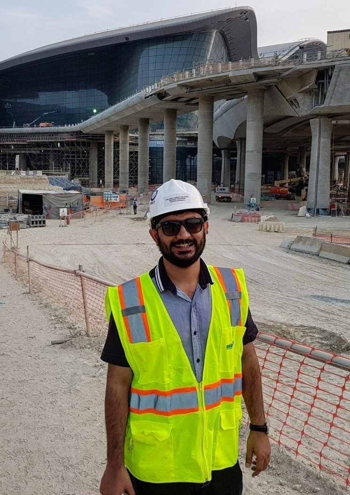
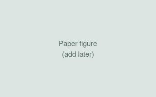
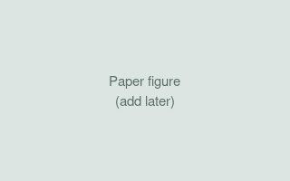
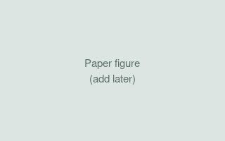
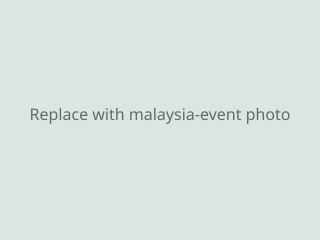

BIM Specialist & Project Engineer
BIM modelling and coordination, site engineering, and project delivery in the fire protection and construction sector.

Email: abdul.g.nizamani [at] hiof [dot] no
I am a Doctoral Research Fellow at Østfold University of Applied Sciences, Norway, advised by Geir Torgersen. My PhD thesis, Green Sponge Buildings, explores how buildings and urban systems can act as climate-resilient sponges through green infrastructure and nature-based solutions. My research combines urban climate science, environmental sensing, and physics-informed machine learning to mitigate urban heat and pollution. Previously, I worked as a Project Engineer (BIM) at NAFFCO in Dubai, and hold degrees from Politecnico di Torino, Universiti Sains Malaysia, and Mehran UET. I am seeking postdoctoral positions (2026–27) in urban climate, green infrastructure, and machine learning for environmental science.
My research focuses on making cities cooler, greener, and more resilient in a changing climate. I combine nature-based solutions (green roofs, vertical greenery systems, urban forests) with physics-informed neural networks that embed physical laws — such as heat diffusion — directly into machine learning models, enabling accurate prediction of urban surface temperatures from satellite data.
In my PhD project Green Sponge Buildings, I study how buildings can absorb, store, and release rainwater and heat like a sponge, integrating stormwater management with thermal comfort. My work spans field sensing, geospatial data fusion, scenario simulation for urban planners, and evidence synthesis across climate zones.

Atmospheric Measurement Techniques · 2024 · Paper

Environmental Science and Pollution Research · 2023 · Paper

Energy and Buildings · 2021 · Paper

BIM modelling and coordination, site engineering, and project delivery in the fire protection and construction sector.
Architectural design and construction documentation for residential and commercial projects.

Active member during my MSc; organised academic and social events together with fellow postgraduate students.
Ad hoc reviewer for MDPI journals and related venues — 8+ reviews completed.